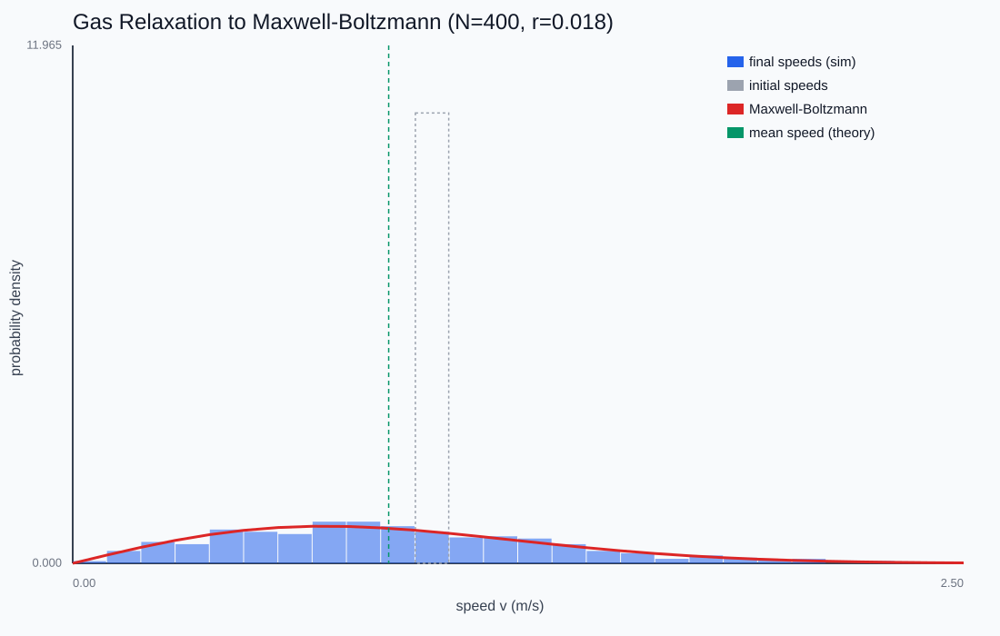
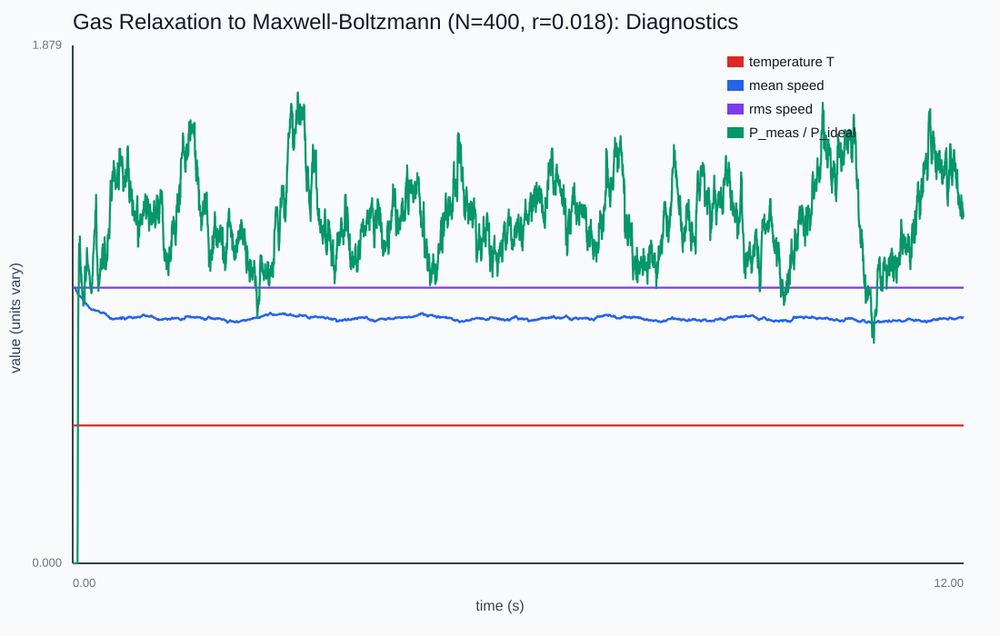
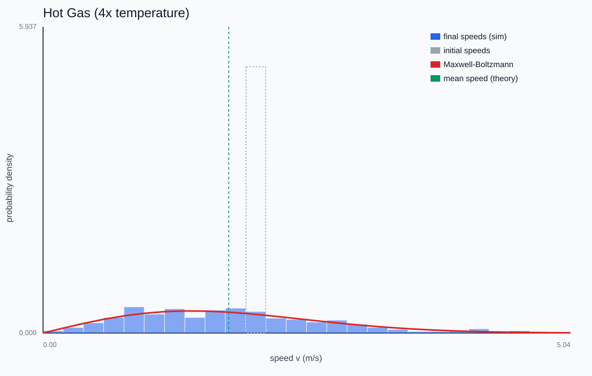

Gas in a Box
Start a few hundred disks all moving at the same speed and let them collide. Where do temperature and pressure — quantities no single particle has — come from?
Every disk starts at the same speed; collisions alone relax the speed distribution onto the Maxwell-Boltzmann curve (gold) on the right. The total kinetic energy — the temperature — never changes.

Temperature is locked, sharing is not
Elastic collisions conserve total kinetic energy exactly, so the temperature T = KE_total/Nk_B is fixed from the very first step. What is not fixed is how that energy is shared — collisions shuffle it between particles until the speed distribution reaches the unique maximum-entropy form.

Maxwell-Boltzmann emerges
In 2D the equilibrium is the Rayleigh distribution f(v) ∝ v exp(-mv²/2k_BT): zero at rest, peaked at the most-probable speed, with an exponential tail. The simulation starts as a delta spike at v_rms and spreads downward in mean while v_rms stays pinned — because rms speed is just a restatement of the conserved energy.

The gas law, derived
Pressure is the time-averaged momentum delivered to the walls. Summing those impulses gives PA = Nk_BT — the ideal gas law derived from nothing but elastic collisions. For finite-radius disks the measured pressure sits above ideal by 1 + 2πr²(N/A): the hard-disk second virial term, the microscopic origin of van der Waals' excluded volume, readable as a number off the plot.
This chapter is drawn from the physics-lab study notes and renders. The longer write-ups and project essays live on the blog.